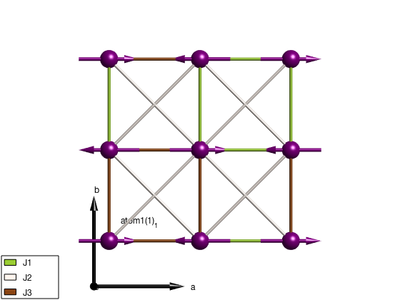
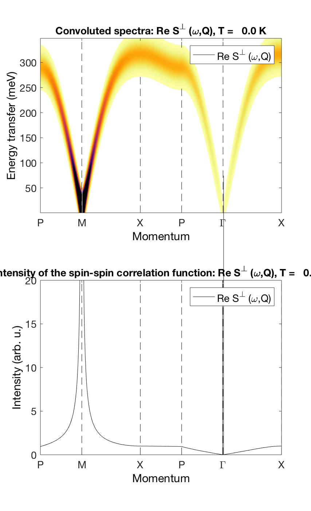

Contents
Spin wave spectrum of La2CuO4
Crystal structure of La2CuO4 contains Cu2+ atoms with S = 1/2 spin on a square lattice. Exchange parameters are taken from the paper: R. Coldea, Phys. Rev. Lett. 86, 5377 (2001). The exchanges are corrected for the ring exchange but the energy renormalization factor included in the paper is not applied.
J = 138.3; Jp = 2; Jpp = 2; Jc = 38; lacuo = sw_model('squareAF',[J-Jc/2 Jp-Jc/4 Jpp]/2,0); lacuo.unit_cell.S = 1/2; plot(lacuo,'range',[2 2 1])
Magnon dispersion and intensity
We plot the magnon dispersion and the neutron scattering intensity that can be directly compared to the paper. We manually apply the quantum renormalization factor on the energies.
Zc = 1.18;
Qlist = {[3/4 1/4 0] [1/2 1/2 0] [1/2 0 0] [3/4 1/4 0] [1 0 0] [1/2 0 0] 100};
Qlab = {'P' 'M' 'X' 'P' '\Gamma' 'X'};
lacuoSpec = lacuo.spinwave(Qlist,'hermit',false);
lacuoSpec.omega = lacuoSpec.omega*Zc;
lacuoSpec = sw_neutron(lacuoSpec);
lacuoSpec = sw_egrid(lacuoSpec,'component','Sperp');
figure
subplot(2,1,1)
sw_plotspec(lacuoSpec,'mode',3,'axLim',[0 5],'dE',35,'dashed',true,'qlabel',Qlab)
colorbar off
subplot(2,1,2)
lacuoSpec = sw_omegasum(lacuoSpec,'zeroint',1e-5,'tol',1e-3);
sw_plotspec(lacuoSpec,'mode',2,'axLim',[0 20],'dashed',true,'colormap',[0 0 0],'qlabel',Qlab)
swplot.subfigure(1,3,1)
 Written by Sandor Toth 16-June-2014